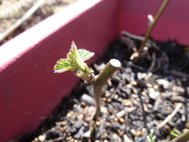
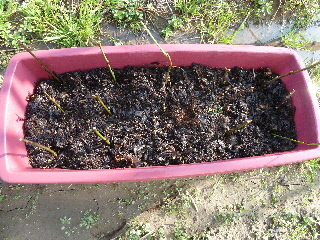
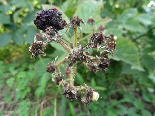
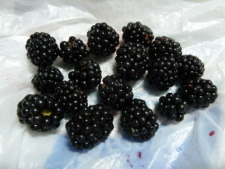
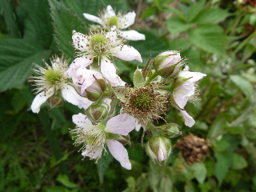

遊びで植物を育てよう
2014/04/06
ブラックベリーの挿し木から芽が出ました。
プランターに挿したブラックベリーから芽が出ました。

暖かくなって、枝から芽が出ただけだと思います。
きっとまだ根は付いていないだろうな。
今後、成長するか枯れるか見守ることになります。
今までスモモとか杏子で失敗しているので、あんまり期待できないですが、成功して欲しいな。
【ブラックベリーTOP】 【果物TOP】 【園芸TOP】
2014/02/16
ブラックベリーを挿してみました。
去年の日記をみてたら、2月末には新芽が出てたので、それまでに挿し木したほうがいいかなと思ってプランタに挿しました。

どうでしょう？
育つかな？
ネットで検索してみたら、ブラックベリーは7月に挿し木するみたいです。
ふーん。じゃあ無駄になっちゃうかな？
まあ実験のつもりで、期待しないで観察します。
でもこのブラックベリーは挿し木で増やしたものが販売してたんですけど、買ったのが初夏だったので、挿したのは春か冬だと思うんだけどなー。
【ブラックベリーTOP】 【果物TOP】 【園芸TOP】
2013/08/10
ブラックベリーはそろそろ終わり。
今年はブラックベリーを沢山食べました。

もうシーズンは終わりですね。
ブラックベッリーの木はドンドン成長しているので、来年はもっと沢山食べれるんだろうな。
【ブラックベリーTOP】 【果物TOP】 【園芸TOP】
2013/07/21
ブラックベリーを収穫しました。
ブラックベリー初収穫です。

今回はちょっとですが、木にはまだ沢山なっています。
なんか甘い果実なイメージがあったんですが、案外爽やかな甘さなんですね。
【ブラックベリーTOP】 【果物TOP】 【園芸TOP】
2013/06/02
ブラックベリーの花が咲きました。
去年は小さくて、花が1つしか咲かなかったブラックベリーですが、今年は巨大になって沢山花が付きました。

花がかたまって咲くんですね。
どんな大きさの実が付くか楽しみです。
【ブラックベリーTOP】
【果物TOP】
【園芸TOP】
巨大化に注意しましょう。
【おいしいものを食べよう。】【たくさん寝よう。】
【ソロ活をしよう!】【季節感のあることをしよう。】【動画視聴はほどほどに。】【当サイトの全てのコンテンツは無断転載禁止です。】